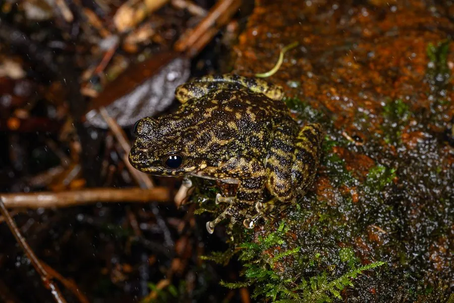

两栖动物 · 动物界
华南湍蛙 Amolops ricketti

华南山区湍急溪流中的蛙类，趾端膨大成吸盘，能吸附在湿滑岩石上，雄蛙常在瀑布旁鸣叫，蝌蚪腹面也有吸盘。
- 分类
- 门脊索动物门纲两栖纲目无尾目科蛙科属湍蛙属
- 栖息环境
- 华南山区海拔 200–1500 m 的湍急溪流、瀑布、山涧与湿滑岩石
- 地理分布
- 中国浙江、福建、江西、湖南、广东、广西、贵州及越南北部
- 保护级别
- IUCN 无危（LC）
物种志
华南湍蛙雄蛙体长约 45–55 mm，雌蛙略大。头扁平，吻端略尖，背部皮肤光滑或具细疣，体色绿褐至黄褐，常带深色斑点与不规则云纹，四肢有横纹；指、趾端明显膨大成吸盘，趾间全蹼，能牢牢吸附在急流中的石面上。
它们分布于中国浙江、福建、江西、湖南、广东、广西、贵州等地及越南北部的山区，栖息于海拔 200–1500 m 的湍急溪流、瀑布与山涧。华南湍蛙多在夜间活动，蹲在溪中石块上捕食水生昆虫、蜘蛛和小型无脊椎动物。繁殖期在 4–7 月，卵产于瀑布下方或急流边的石缝中，蝌蚪腹部有吸盘，可吸附在石面上抵抗水流。它们对水质变化敏感，可作为山地溪流环境的指示物种。
形态与习性
- 食性水生昆虫、蜘蛛和小型无脊椎动物
- 体长雄蛙约 45–55 mm
- 繁殖4–7 月，卵产于急流边的石缝
- 特征趾端膨大成吸盘，趾间全蹼
- 习性夜行性，栖于急流中的石块上
- 指示对水质变化敏感，可指示溪流环境
趣味知识
- 它的趾端膨大成吸盘，能牢牢吸在湿滑的岩石上，任急流冲刷也不掉落。
- 蝌蚪的腹部也长有吸盘，可以贴在石面上啃食藻类。
- 雄蛙常在瀑布旁的岩石上鸣叫，叫声常被水声掩盖。